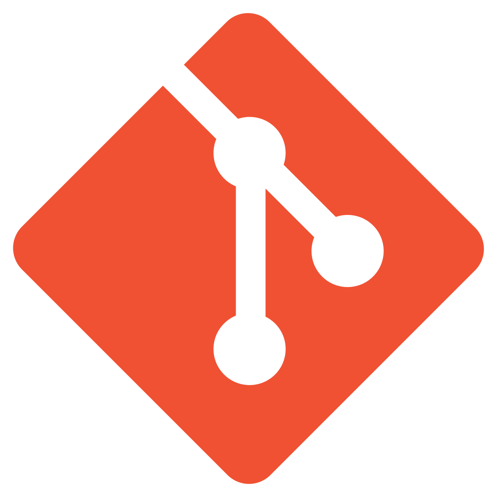

The Problem:
Currently, no system exists for RIT Students to easily and visually track their overall degree progress in both graduate and undergraduate programs. Instead, they must use the antiquated Student Information System (known internally as SIS) to find the courses they’ve completed as well as how many credits they’ve earned toward each facet of their degree (core classes, electives, etc.). The process as a whole is fragmented, confusing, and time-consuming.
The Solution:
An interactive dashboard where students and academic advisors can easily track and monitor progress toward degree completion at a glance. Past courses (with credits and final grades), present enrollment, and future requirements will be pulled from the student's information and graphically displayed. The dashboard will display key milestones for the student as well as specific alerts to let them know of time-sensitive information. Students can be shown options to fulfill requirements in future semesters (such as a list of possible elective courses).
Audience and Stakeholders
Anyone involved with a student's individual progress toward a degree is considered a stakeholder in this development. Primarily, the two groups with the highest prominence are the students themselves and the academic advisors that service student requests pertaining to their degree requirements.
The Students
With a comprehensive, intuitive display of outstanding degree requirements as well as those already completed, students can more easily plan for their upcoming classes as well as feel a better sense of gratification seeing a more tangible representation of their end goal. It's also important that as much feedback is collected from the student body as possible; their comments and concerns can be translated into functional requirements for future versions of the service to deliver the best experience possible.
Academic Advisors
Academic advisors would also have much to gain from this service being implemented. Many individual colleges within the university currently use a pen-and-paper worksheet system for tracking students' degree requirments, and students often need to meet with them to discuss this and plan for future semesters. The RIT Degree Tracker has the potential to cut down on much of this communication, freeing up academic advisors for more complex assignments. In order to address as many concerns as possible, they should be consulted early and often throughout the development process to ensure that the service is an adequate replacement for their meetings, and that it contains all necessary and pertinent information.
Working with Stakeholders
Throughout the design and development process, it's important that the stakeholders remain constantly involved to ensure the product meets or exceeds their expectations. Below is a table of different aspects of stakeholder involvement, as well as how our team will handle them.
| Goals | A streamlined degree management experience, easier identification of academic requirements, ability to translate academic requirements into action items (e.g. required classes to schedule per-semester) |
|---|---|
| Worries | System complexity, usability versus previous systems, ability to adapt quickly to a new system, adequate support when errors or difficulties do occur |
| Ideas | Discuss stakeholder ideas in internal meetings, integrate accepted ideas into development pipeline |
| How to Involve Them | Conduct contextual inquiry via interviews, continuously communicate progress on design and development, usability testing |
| How to Communicate Progress | Online/interactive prototyping, usability testing, feedback surveys, beta access and monitoring |
| How to Understand their Communication | Feedback forms, internal meetings to discuss stakeholder feedback |
| How to Communicate Our Design | Training, user guides, tooltips and help messages, press releases (on launch) |
Tools & Technologies
 Figma
Figma
Design Composites Invision
Invision
Prototyping- Git
Version Control  HTML/CSS
HTML/CSS
Website
Project Schedule
- Week 1 (8/22):
- No Activity
- Week 2 (8/29):
- Form groups, discuss/brainstorm project ideas
- Week 3 (9/5):
- Milestone 1 (Project Focus) due 9/12
- Week 4 (9/12):
- No Activity
- Week 5 (9/19):
- Group Meeting: Formulate Interview Questions
- Conduct Interviews
- Individually Summarize Interview Findings
- Week 6 (9/26):
- Group Meeting: Aggregate Interview Findings
- Build Affinity Diagram
- Build Infogram Dashboard
- Group Meeting: Form Results Content
- Update Website with Milestone 2 Information
- Milestone 2 (Contextual Inquiry) due 9/29
Meet the Team
Betsy
I live in Rochester and work full time remotely as UX Developer. In my current role I am the lead UX Designer, usability tester and front-end developer. I’m looking forward to taking this course and learning something new! Outside of work, I love to rock climb 🧗, play video and board games 🎮, read 📚, and hang out with my friends!
Margaret
I'm a software engineer at Paychex and live in Rochester, NY. I'm pursuing my Master's Degree in HCI; I've wanted to learn more about the design side of software. Outside of school and work I enjoy golfing, hiking, reading history, and spending time with family and friends.
Natalia
LX designer and online MS student at RIT with experience working in the multilateral sector, managing learning management systems, and creating online learning programs for employees, government officials, and the general public. Citizen science projects and creating disability-inclusive learning experiences spark her interest. Lives in Pittsburgh, PA.
Nikita
Electrical engineer turned UX Designer, I recently moved to Rochester to pursue a masters degree in HCI at RIT as a full time student. I'm passionate about user research and learning to design emerging technologies to create seamless user experiences. I enjoy finding simple solutions to enhance an experience and I also like to go hiking⛰️ , painting🎨🖌️ and cooking 👩🍳!
Alec
Full-stack web developer with a background in marketing from southwestern Connecticut. Originally graduated with a bachelor's in Game Design & Development and now pursuing a Master's in Human-Computer Interaction. Seeking a career in the UX engineering field with a focus on accessible design. Outside of school, find me on the disc golf course, in my makerspace, or with my friends!
Team Rules and Covenants:
- Punctuality: All team members should attend working sessions on time and meet group deadlines. Any planned absences should be communicated in advance.
- Commitment: Each member of the team should commit to delivering quality work, or work which is completed to the best of their ability with the skills they have.
- Respect: Team members should behave professionally and be considerate of other team members.
- Collegiality: The distribution of tasks within the team should be well-balanced, and each person should contribute equally to the best of their ability.
- Communication: Open lines of communciation should always be maintained. Team group chats should be used to the fullest extent possible for most, if not all communication purposes (e.g. progress reports, issues, planned absences, etc.)
Grounds for Expulsion:
If any team member repeatedly breaks one or more of the above rules, they may be liable for expulsion from the team. Such a decision would be made after the group has consulted internally as well as with the class professor about the offending student's behavior.